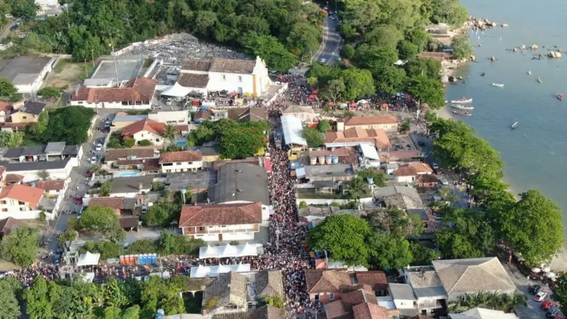

Conhecido por receber pessoas de todas as idades, o carnaval de Santo Antônio está de volta após dois anos. Serão cinco dias de festa com uma programação para toda a família, repleta de marchinhas, camarotes e trios elétricos que desfilarão pela Rua Cônego Serpa!

Carnaval de rua de Santo Antônio de Lisboa retorna em 2023 – Foto: Divulgação/ND
O carnaval em Santo Antônio de Lisboa acontecerá nos dias: